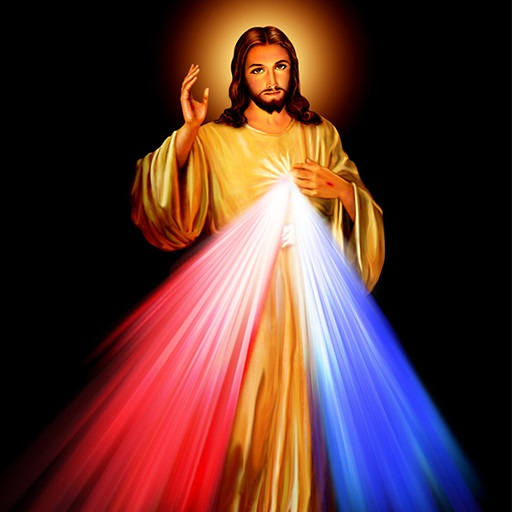

ജ്ഞാനം മൂകരുടെ വായ തുറക്കുകയൂം ശിശുക്കളുടെ നാവിനു ശുദ്ദമായി സംസാരിക്കാൻ കഴിവ് നൽകുകയും ചെയ്തു" എന്ന ജ്ഞാനം 10 /21 വചനം ഞങ്ങളെ വളരെ അധികം സ്വാധീനിച്ചു.ഞങ്ങളുടെ രണ്ടാമത്തെ മകൻ ബിനെയ് ജനിച്ചു നാല് മാസമായപ്പോൾ നിരന്തരമായ ജലദോഷവും ശ്വാസംമുട്ടും വന്നു.അത് അവന്റെ ശാരീരികവും ബുദ്ധിമുട്ടും മായ വളർച്ചയെ ബാധിച്ചു.അലോപ്പതി,ആയുർവേദം,ഹോമിയോപ്പതി തുടങ്ങിയ എല്ലാ ചികിത്സാരീതികളെല്ലാം പരീക്ഷിച്ചെങ്കിലും സുഖപ്പെട്ടില്ല.സംസാരിക്കുകയോ നടക്കുകയോ ചെയ്യുകയില്ല.ഈ നാളുകളിലെല്ലാംഞങ്ങൾ വചനത്തിലും ജപമാലയിലും മുറുകെ പിടിച്ചു.തുടർന്ന് രണ്ടു വയസിനു ശേഷം അവൻ നടക്കാൻ തുടങ്ങി.മൂന്നു വയസു കഴിഞ്ഞപ്പോൾ ഏതാനും വാക്കുകൾ പറഞ്ഞുതുടങ്ങി!.
